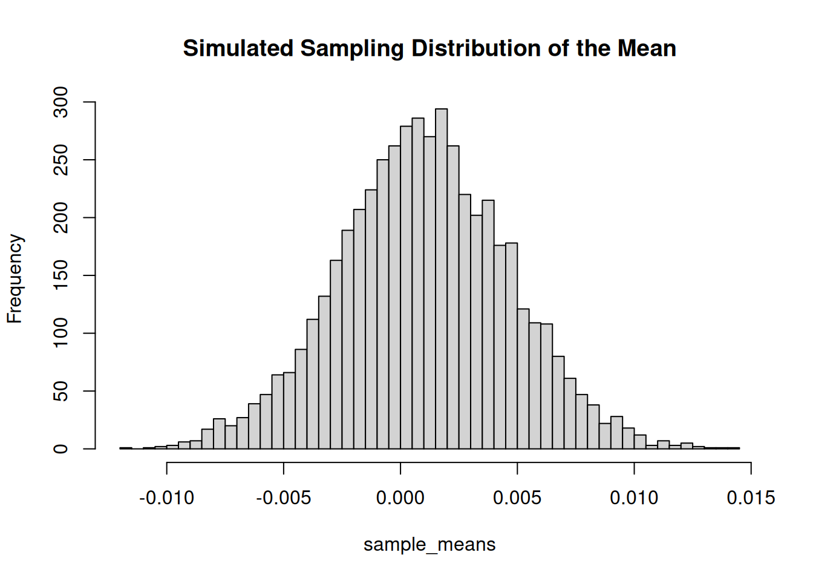
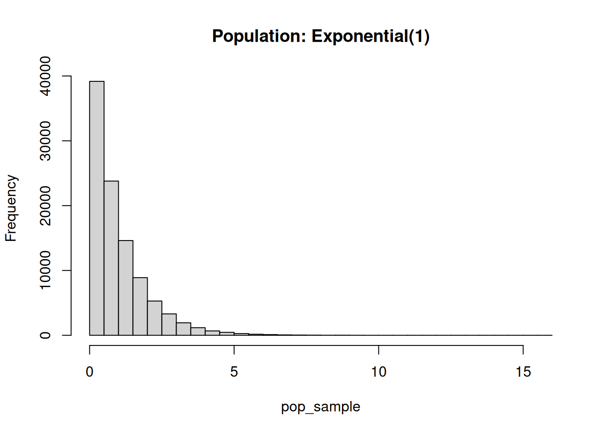
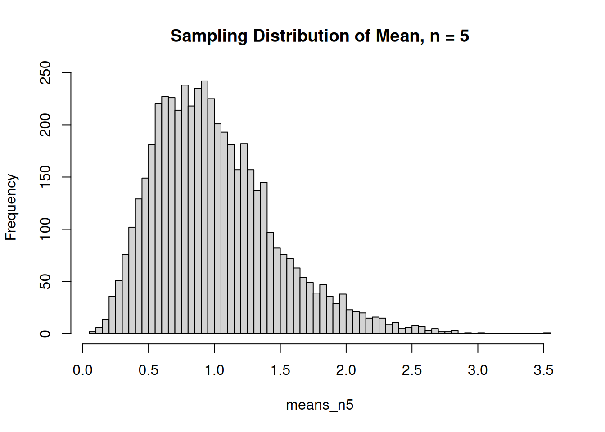
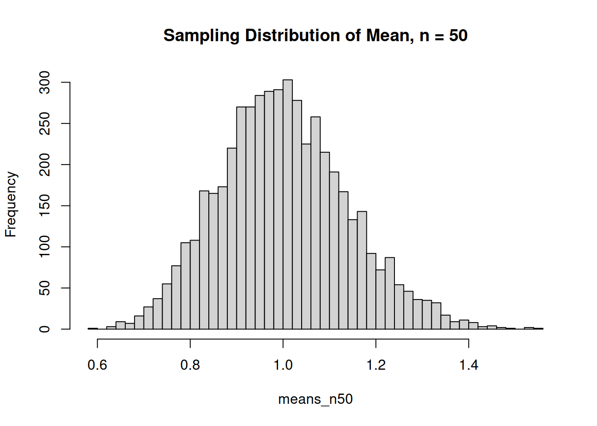
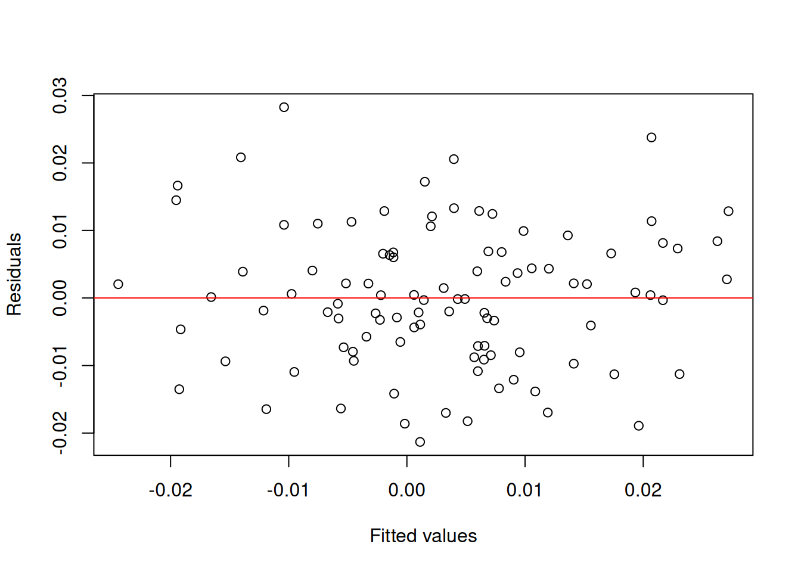

set.seed(1)
rnorm(3)[1] -0.6264538 0.1836433 -0.8356286Background Notes
These notes provide a systematic reference for the simulation and inference concepts introduced in Lecture 10’s class.qmd and class.R. Lecture 9 taught you to build a trustworthy analysis dataset. Today’s lecture asks what to do once you have one: how much should you trust a number computed from data?
Classical statistics answers this question with formulas derived under mathematical assumptions: the Central Limit Theorem, the sampling distribution of an estimator, the behavior of a t-test. These formulas are correct, but they can feel like facts handed down from above rather than things you understand. Simulation offers a different, complementary path: build a tiny, fully known world (a data-generating process you specify completely), repeatedly draw samples from it, and watch what the classical formulas describe actually happen.
This matters practically, not just pedagogically. Many real statistical questions have no closed-form answer – the exact sampling distribution of a complicated estimator, the power of a nonstandard test, the coverage of a confidence interval under non-normal data. Simulation lets you investigate these questions directly, at the cost of introducing a new kind of uncertainty of its own: Monte Carlo error, which shrinks as you simulate more, but never disappears.
This lecture uses rnorm(), runif(), rexp(), rt(), t.test(), and lm(), all part of base R. No new packages beyond what you have already loaded are required.
Computers are deterministic machines; they cannot produce truly random numbers without external physical input (e.g., hardware entropy sources). Instead, R uses a pseudorandom number generator (PRNG): a deterministic algorithm that produces a sequence of numbers that behaves statistically like a random sequence, starting from an internal state called the seed.
Without recording a seed, a “random” result in a report is not actually reproducible – no one, including you in six months, can regenerate the exact numbers. Always call set.seed() explicitly before any simulation, and record the seed value directly in your code (not just “I used some seed”).
set.seed() resets R’s entire random number stream. If you run two simulations in the same script without resetting the seed between them, the second simulation continues from wherever the first one left the RNG state – which is often fine, but is NOT the same as saying both simulations started fresh. If you need two independently reproducible simulations, call set.seed() again before each.
| Function | Distribution | Key arguments |
|---|---|---|
runif(n, min, max) |
Uniform | min, max |
rnorm(n, mean, sd) |
Normal | mean, sd |
rexp(n, rate) |
Exponential | rate |
rt(n, df) |
Student’s t | df (degrees of freedom; smaller df = heavier tails) |
rbinom(n, size, prob) |
Binomial | size, prob |
rpois(n, lambda) |
Poisson | lambda |
The fundamental building block of every simulation in this lecture: draw one sample, compute a statistic, and repeat the entire process many times, independently.
[1] -4.471473e-05The two sample means differ, even though both samples came from the exact same distribution – this variability is what the rest of the lecture investigates.
A Monte Carlo approximation estimates a quantity (often a probability or expectation) by simulating many draws from a known process and computing the relevant proportion or average, rather than deriving an exact formula.
[1] 0.06057076[1] 0.06241The two values should be close but not identical – the Monte Carlo estimate carries its own sampling error, which we quantify next.
If \(\hat{p}\) is a Monte Carlo estimate of a probability based on \(n\) simulations, its standard error is approximately:
\[ \text{SE}(\hat{p}) = \sqrt{\frac{\hat{p}(1 - \hat{p})}{n}} \]
[1] 0.0007649509To cut the Monte Carlo standard error in half, you need four times as many simulations, not twice as many, since the error scales as \(1/\sqrt{n}\). This is the same square-root law that governs the standard error of any sample mean – Monte Carlo simulation is itself just a sampling procedure, subject to the same statistical laws it is being used to study.
n estimate exact
1 1e+01 0.10000 0.06057076
2 1e+02 0.08000 0.06057076
3 1e+03 0.05000 0.06057076
4 1e+04 0.05970 0.06057076
5 1e+05 0.06046 0.06057076As n grows, the Monte Carlo estimate generally gets closer to the exact value, though not monotonically for any single run – randomness means a smaller simulation can occasionally land closer to the truth than a larger one, purely by chance. What is guaranteed is that the typical size of the error, measured across many repeated simulations, shrinks predictably with n.
A sampling distribution is the probability distribution of a statistic (such as a sample mean) computed from repeated, independent samples drawn from the same population. It is a property of the procedure (take a sample of size n, compute the mean), not of any single sample.

The CLT states that, regardless of the population’s shape, the sampling distribution of the mean approaches normality as sample size grows (provided the population has finite variance). We can observe this directly even when the population is nowhere close to normal.



At n = 5, the sampling distribution still shows visible skew, inherited from the population. By n = 50, it looks close to symmetric and bell-shaped, even though the population itself never changed shape. This is the CLT, demonstrated rather than merely stated.
[1] 0.3162278[1] 0.3022408Standard error scales as \(\sigma / \sqrt{n}\): increasing the sample size by a factor of 10 shrinks the standard error by a factor of \(\sqrt{10} \approx 3.16\), not by a factor of 10. This sublinear relationship is a recurring, important fact: doubling your sample size does not halve your uncertainty.
A 95% confidence interval procedure is designed so that, across many repeated samples, the resulting interval contains the true parameter approximately 95% of the time. This is a frequency claim about the procedure, not a probability statement about any single interval you compute from one dataset.
[1] 0.9375The empirical coverage should land close to 0.95, confirming that the standard “mean +/- 1.96 x SE” procedure performs as advertised when its assumptions (here, normally distributed data) hold.
A Type I error is rejecting a true null hypothesis (a false positive). A Type II error is failing to reject a false null hypothesis (a false negative). Power is the probability of correctly rejecting a false null hypothesis – i.e., 1 minus the Type II error rate.
[1] 0.0455[1] 0.276[1] 0.9425Larger samples make a fixed true effect easier to detect, because the standard error of the mean shrinks with \(\sqrt{n}\). This is the same square-root relationship from Section 4.4, now showing up as a practical consequence for hypothesis testing: all else equal, a bigger sample gives you more power to detect a real effect.
Call:
lm(formula = stock_return ~ market_return, data = df_demo)
Residuals:
Min 1Q Median 3Q Max
-0.0213162 -0.0074653 -0.0000061 0.0067627 0.0282552
Coefficients:
Estimate Std. Error t value Pr(>|t|)
(Intercept) 0.0006792 0.0010522 0.645 0.52
market_return 1.1929378 0.1084163 11.003 <2e-16 ***
---
Signif. codes: 0 '***' 0.001 '**' 0.01 '*' 0.05 '.' 0.1 ' ' 1
Residual standard error: 0.01031 on 98 degrees of freedom
Multiple R-squared: 0.5527, Adjusted R-squared: 0.5481
F-statistic: 121.1 on 1 and 98 DF, p-value: < 2.2e-16
A patternless, roughly constant-width scatter of residuals around zero is a good sign for the model’s assumptions (linearity and constant variance). Visible curvature, or a funnel shape (residual spread changing systematically with fitted value), signals a violated assumption.
Everything in this lecture connects here: the standard error on a regression coefficient is a formula-based shortcut for exactly the kind of sampling variability you built up intuition for by direct simulation in Sections 3-5. If you simulated many datasets from the same true data-generating process (same true slope, same noise level) and fit lm() to each, the resulting collection of estimated slopes would form a sampling distribution, and its standard deviation would match the “Std. Error” column lm() reports from a single fit.
[1] 0.1008593[1] 0.1084163These two numbers should be close, which is exactly the point: lm()’s reported standard error is a mathematical shortcut for something you can also discover directly by simulation.
A simulation demonstrates behavior under the specific data-generating process, sample size, and conditions you chose. It is not a mathematical proof that a method works in general. Changing any of those conditions – a different distribution, a smaller sample, the presence of outliers – can change the conclusion entirely. This is not a weakness; it is exactly what makes simulation useful: it lets you map out where a method’s guarantees hold and where they break down, in a way a single formula cannot show you directly.
set.seed(70)
one_ci_t <- function(n = 30) {
x <- true_mean_return + true_sd_return * rt(n, df = 3)
se <- sd(x) / sqrt(n)
m <- mean(x)
c(lower = m - 1.96 * se, upper = m + 1.96 * se)
}
intervals_t <- sapply(1:2000, function(i) one_ci_t())
coverage_t <- mean(intervals_t["lower", ] <= true_mean_return & true_mean_return <= intervals_t["upper", ])
coverage_t[1] 0.949Compare coverage_t to the coverage value computed in Section 5.1 under normal data. If coverage_t is noticeably below 0.95, this demonstrates that the standard “mean +/- 1.96 x SE” interval, which relies on an approximately normal sampling distribution, can under-cover when the underlying data has heavier tails than a normal distribution – exactly the kind of behavior real financial returns often exhibit.
set.seed() must be called explicitly, and the seed value recorded, for a simulation to be genuinely reproducible.set.seed() resets R’s global random number state; call it again before each independent simulation if you need separate reproducibility.lm() fits a linear regression model; its “Estimate” column gives fitted coefficients, and its “Std. Error” column quantifies sampling variability in each coefficient.Today’s simulations produced numerical summaries, quick base R histograms, and lm() output – all genuinely useful for exploration, but not yet polished enough for a report meant for other people to read. Lecture 11 introduces ggplot2, a far more deliberate and expressive system for building figures, along with the principles that separate an exploratory graphic (made quickly, for yourself, to check something) from an explanatory graphic (made carefully, for an audience, to make an argument). You will also learn to combine code, figures, and narrative text into a single reproducible Quarto report – exactly the kind of document that could properly communicate everything you discovered in today’s simulation exercises.